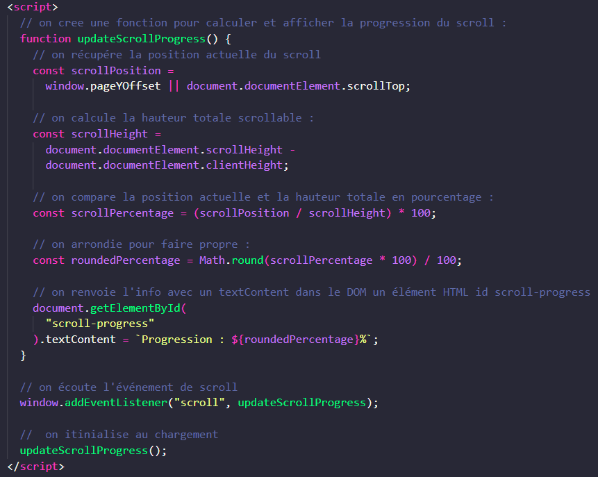

La fonction updateScrollProgress() calcule la position actuelle du scroll et la hauteur totale scrollable.
Elle détermine ensuite le pourcentage de progression en divisant la position actuelle par la hauteur totale scrollable.
Le pourcentage est arrondi à deux décimales pour une meilleure lisibilité.
La progression est affichée dans un élément HTML avec l'ID "scroll-progress".
Un écouteur d'événement est ajouté à la fenêtre pour détecter les événements de scroll et mettre à jour la progression en temps réel.
La fonction est également appelée au chargement de la page pour afficher la progression initiale.

Exercice :
à partir de ce code, essayez de vous l'approprier en améliorant son usage : composez une "progression bar" colorée et sticky dans le header.
+ Quand 100% est atteint affichez un smiley